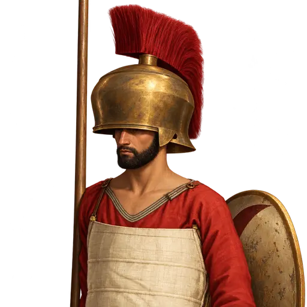
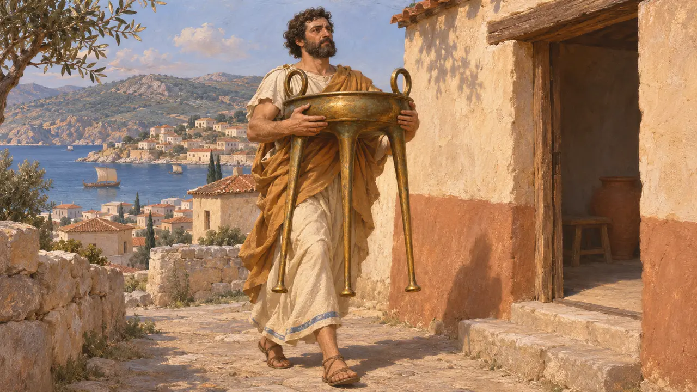
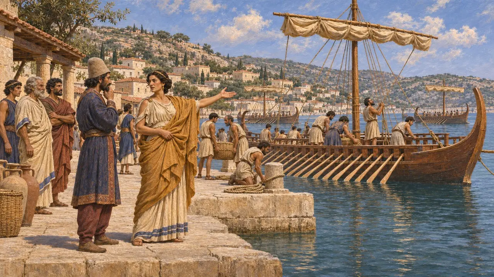
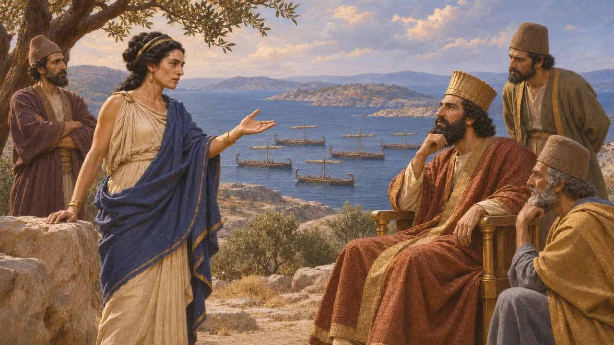
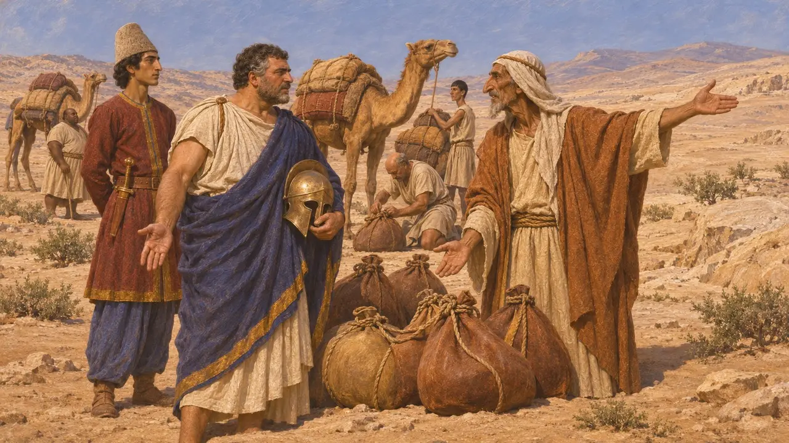
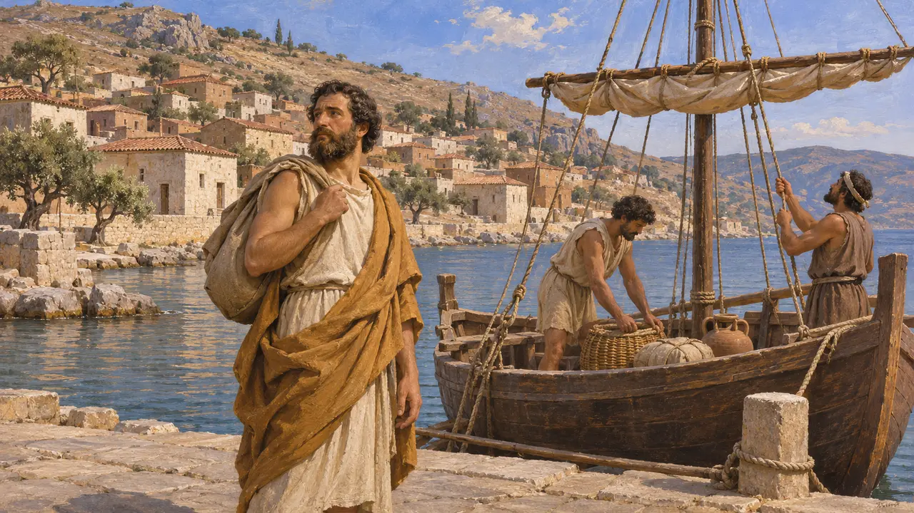

Halicarnaso
Ciudad costera griega y caria del suroeste de Anatolia bajo dominio persa, siglos VI-V a. e. c.
Halicarnaso era un puerto de la costa de Caria. Heródoto, que nació allí, la llama una ciudad griega doria, y quedó dentro del imperio persa tras la conquista de la costa de Anatolia en tiempos de Ciro. Es conocida como la patria de Fanes y Artemisia, que aparecen en las guerras con Grecia, y como la ciudad natal de Heródoto.
En el juego: El juego menciona Halicarnaso solo en la Crónica y en los artículos de eventos, como la patria de Fanes en las entradas sobre Egipto y de Artemisia en las entradas sobre Salamina. No tiene nivel, edificio ni mecánica propios.

Una ciudad doria en tierra caria
Relato antiguoHeródoto cuenta a Halicarnaso entre las ciudades dorias de la costa suroccidental, aunque se hallaba en Caria. Dice que fue excluida del santuario común de Triopio después de que un ciudadano, Agasicles, se llevara a su casa un trípode que había ganado como premio y que debía haberse consagrado allí.
Herodotus 1.144

Bajo dominio persa
Relato antiguoHeródoto relata la conquista de los jonios, los carios y los licios por Hárpago durante el reinado de Ciro. Con ella, la costa quedó bajo la autoridad persa. En tiempos de la invasión de Jerjes, Halicarnaso es una ciudad sometida que envía naves a la flota del Rey bajo el mando de su propia gobernante, Artemisia.
Herodotus 1.171-176

Artemisia
Relato antiguoHeródoto nombra a Artemisia como gobernante de Halicarnaso, Cos, Nisiros y Calidna, y dice que llevó cinco naves a la flota de Jerjes. Cuenta que aconsejó no librar un combate naval en Salamina y que Jerjes apreciaba su criterio. Es la única fuente completa, de modo que no se pueden comprobar los discursos.
Herodotus 7.99; 8.68-69

Fanes
Relato antiguoHeródoto dice que Fanes de Halicarnaso sirvió a Amasis de Egipto como jefe de mercenarios y desertó a favor de Cambises antes de la invasión. Refiere que Fanes acordó el cruce del desierto con un soberano árabe. Heródoto añade que los mercenarios griegos y carios que quedaron atrás mataron a los hijos de Fanes.
Herodotus 3.4-11

La propia ciudad de Heródoto
En disputaUna tradición posterior afirma que Heródoto abandonó Halicarnaso tras tener problemas con su tirano Lígdamis y vivió en Samos. Esto procede de autores tardíos como la Suda, no de las Historias. Los historiadores aceptan que era originario de esa ciudad, pero discuten hasta qué punto es fiable la biografía posterior.
Suda, entry Herodotus
Fuentes
- Herodotus 1.144
- Herodotus 1.171-176
- Herodotus 7.99
- Herodotus 8.68-69
- Herodotus 3.4-11
- P. Briant, From Cyrus to Alexander, 2002